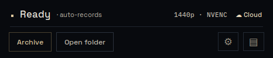
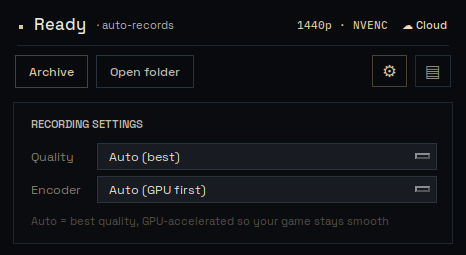

레코더를 켜두고 리그 오브 레전드를 플레이하면 끝입니다. 화면이 무엇을 뜻하는지, 설정은 어떻게 바꾸는지, 막힐 때는 어떻게 하는지 안내합니다.

기본값(Auto)이 대부분 최선입니다. 창의 ⚙를 누르면 열리고, 바꾸면 다음 녹화부터 적용됩니다.

아카이브 상단 검색에서 소환사명이나 챔피언으로 찾을 수 있습니다.
같은 게임을 여럿이 녹화하면 한 카드로 묶입니다. 경기 안에서 시점 탭으로 자리를 바꿔가며 같은 교전을 다시 봅니다.
영상 옆에 KDA·CS·골드 추이·오브젝트가 Riot 공식 데이터로 정리됩니다.
녹화가 안 켜져요
대부분 그래픽 드라이버가 오래된 경우입니다. NVIDIA 드라이버를 최신으로 올리면 거의 해결됩니다. 캡처 방식은 레코더가 자동으로 고르니 따로 만질 게 없습니다.
영상이 아카이브에 안 올라가요
화면 우상단이 ☁ Cloud인지 확인하세요. 인터넷이 잠깐 끊기면 영상을 로컬에 보관했다가, 연결되면 자동으로 다시 올립니다.
경기 수가 이상해요
아카이브는 15초마다 자동으로 갱신됩니다. 방금 끝낸 게임이 안 보이면 잠시 후 새로고침해 주세요.
화면이 검게 녹화돼요
레코더는 전체화면도 잡히는 WGC 방식을 기본으로 씁니다. 그래도 검게 나오면 대개 그래픽 드라이버 문제이니 최신으로 올려주세요.
처음 켰더니 한참 멈춰 있어요
최초 1회는 영상 도구(ffmpeg)를 자동으로 받아옵니다. 1~3분 기다리면 Ready로 바뀝니다.
설치 과정 없이 압축만 풀면 바로 실행됩니다. 설치 안내와 권장 사양은 다운로드 페이지에 있습니다.